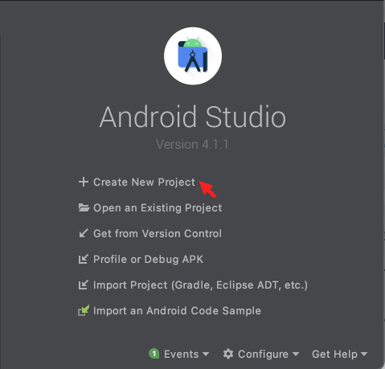
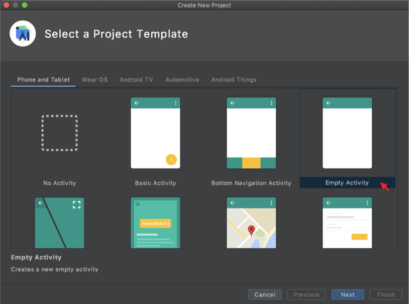
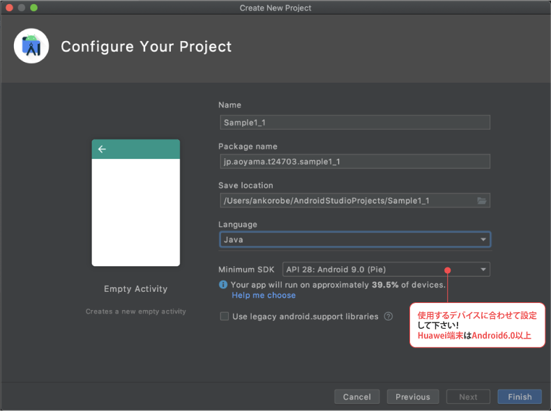
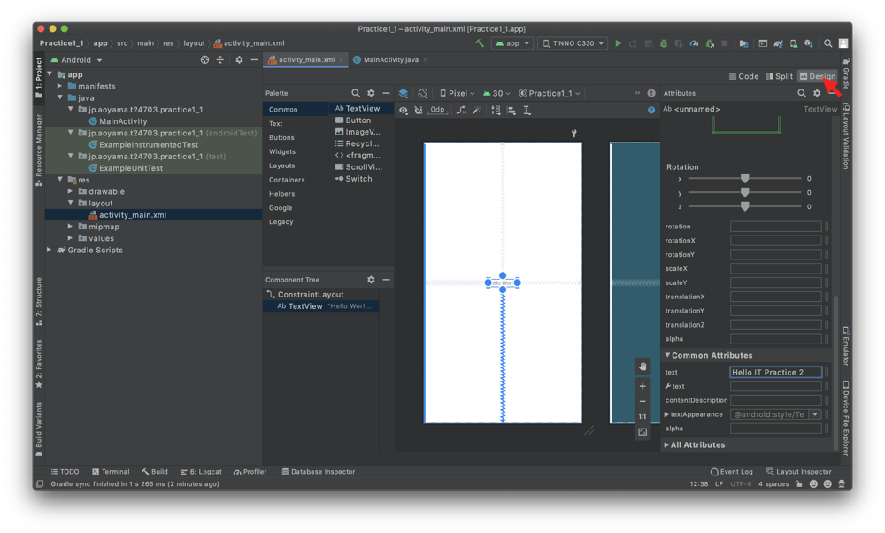
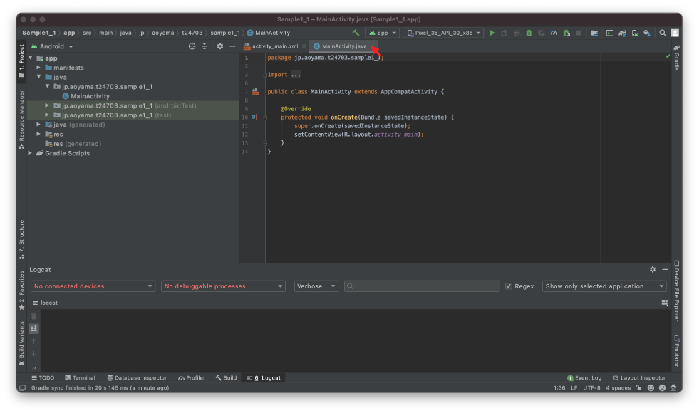
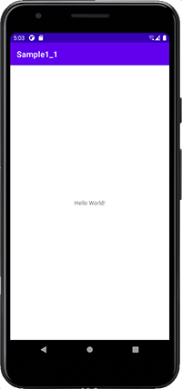

第1回：Android Studioアプリケーション開発
最終更新日：2021年4月6日
今回の実験において実行確認・提出するもの
実行確認は、TA・教員からのチェックを受けて下さい。
イントロダクション
Android Studio は、「IntelliJ IDEA」をベースとした、Android アプリ開発用の公式の統合開発環境（IDE）です。IntelliJ の強力なコードエディタと開発ツールに加えて、Android アプリ作成の生産性を高める様々な機能を利用できます。
「IntelliJ IDEA」はチェコに本社を置くJetBrains社が開発し、OpenSourse化したIDEです。「IntelliJ IDEA」はJavaで実装されており、多言語をサポートしており、Eclipceの次に世界的に人気のあるIDEです。主に、Java・Python・Javascriptを用いたプロジェクト開発に向いています。さらに、開発・デバッグ・テスト・パフォーマンス向上のためのツールが含まれており、アプリの開発をより迅速かつ簡単に行うことができます。作成したアプリは、あらかじめ設定された様々なエミュレータや自分のモバイル端末でテストしたり、本番用アプリを作成したり、Google Playストアで公開することができます。
Eclipseを用いたAndroid開発の経験のある人は、Eclipse ADT（Android Development Tool）と何が違うのか、Eclipse ADTで作成したProjectは互換性があるかが懸念点ですが、基本的には互換性があると考えて頂いて構いません。詳しくは様々な解説サイト（例：Eclipse ADTに代わるIDEとなるか？Android Studioの基礎知識）をご参照ください。
Android Studioは、WindowsやLinuxを搭載したコンピューター、およびmacOSを搭載したMacで利用できます。Android Studioには、最新のOpenJDK（Java Development Kit）がバンドルされています。
Task 1: Android Studioのインストール
Task 1では、Android Studioをインストールする方法を学びます。なお、本ページでは4.1.1 for Mac版を例にしていますが、Windows版やバージョンの違いにより、GUIや選択肢が変更されている場合がありますので、各自がインストールしたバージョンに合わせて操作していきましょう。（いずれのバージョンでも機能に違いはありません。）
- Android Developersのサイト（Android Studioのインストール）にアクセスし、指示に従ってAndroid Studioをダウンロードしてインストールします。
- すべてのステップでデフォルトの設定を受け入れ、すべてのコンポーネントがインストール用に選択されていることを確認してください。
- インストールが完了すると、セットアップ・ウィザードがAndroid SDKを含むいくつかの追加コンポーネントをダウンロードしてインストールします。
- インターネットの速度によっては時間がかかり、手順が重複する場合があります。ダウンロードが完了すると、Android Studioが起動し、最初のプロジェクトを作成する準備が整います。
Task 2: 使用端末（タブレット）の設定
Task 2では、使用端末（タブレット）の設定をします。
- 設定 -> 端末情報 -> ビルド番号を7回タップ（気にせずタップしまくる） -> PIN入れてデベロッパーになります。
- 設定 -> システム -> 詳細設定 -> 開発者向けオプション -> USBデバッグをオン（許可）-> "USBデバッグが接続されました"と表示されるのを確認してください。
- 設定 -> セキュリティ -> 提供元不明のアプリをオン（許可）
Task 3: 「Hello World」アプリの作成
Task 3では、最初のAndroidアプリ「Hello World」を作成し、アンドロイドデバイス（実機）もしくはエミュレータ上で実行します。
- Android Studioがまだ開かれていない場合は、Android Studioを開きます。
- 「Welcome to Android Studio」ウィンドウ内の、"Start a new Android Studio project"または"Create New Project"をクリックします。
 Fig.3 Android Studioの起動画面 - デフォルトのプロジェクトの場所が、Hello Worldアプリやその他のAndroid Studioプロジェクトを保存する場所であることを確認するか、任意のディレクトリに変更します。
- Company Domain（会社のドメイン）としてデフォルトのandroid.example.comを受け入れるか、独自のドメインを作成します。package名は所属組織のドメイン名を逆から書くのが暗黙のルールです。本演習でのpackage名は「学生番号.組織.国」とします。e.g. a000001.aoyama.jp
- 「Create Android Project」ウィンドウ内、"Select a Project Template"の "Empty Activity"を選択し、「Next」をクリックします。Activityとは、"Androidアプリの画面"に相当します。ボタンやリストが配置された画面、Webページが表示されている画面、3Dグラフィックスが表示されている画面を作成するためにActivityはAndroidアプリには欠かせない要素となります。
 Fig.4 「Create Android Project」ウィンドウ内の"Select a Project Template"画面例 - "Configure Your Project"で、"Name"、"Package name"、"Save location"、"Language"、"Minimum SDK"を設定します。本演習では、"Name:Sample1_1"、"Package name:jp.aoyama.aから始まる学籍番号.sample1_1"、"Save location：デフォルト"、"Language:Java"、"Minimum SDK: 使用端末のAndroidのバージョン以下に合わせること"に変更して下さい。
 Fig.5 「Create Android Project」ウィンドウ内の"Configure Your Project"画面例 - Android StudioのEditorが表示されます。activity_main.xmlタブをクリックして、レイアウト・エディタを表示します。レイアウト・エディタの「Design」タブが選択されていない場合は、これをクリックすると、以下のようにレイアウトのグラフィカルな表示を確認できます。
 Fig.6 "Design Editor"画面例 - MainActivity.javaタブをクリックすると、以下のようなコードエディタが表示されます。
 Fig.7 "Code Editor"画面例 - PCとタブレットが接続された状態で、Runボタン「
」を押下します。タブレット画面内で「Hello World!」が表示されたら、「Hello World」アプリの完成です。デバッグした端末のスクリーンショットを保存したい場合は、View -> Tool Windows -> Logcat -> ">>"を押下 -> カメラアイコンを押下してください。
 Fig.8 "Hello World"アプリの実行例 Fig.9 Android Studioからスクリーンショットを撮影する方法
機能説明: Android Studioのコード編集機能
Androidアプリ開発では、プログラミング（実装したい機能・動作など）はJavaファイルとして実装、レイアウトのデザイン（実装したいGUI・画面構成など）はXMLファイルとして実装します。

setContentView(R.layout.activity_main);をコメントアウトして、アプリを起動するとなにが起きるかを確かめてみましょう。
「CTRL」＋「SPACE」キーを押下するとコードアシストのpop-upが起動します。
エディタ左側のNavigation windowからmanifests, layout, menu, valuesの各項目を展開（►）すると、アプリの設定・内容・属性の定義などに用いる複数のXML形式のファイルを確認することができます。
AndroidManifest.xml
Manifestがアプリケーションに関する必要不可欠な情報を表現し、それをAndroidシステムに伝え、アプリケーションのコードが実行される前に、この情報をシステムが持っていなければなりません。Manifestの主な役割は以下の通りです。
- アプリケーションのJavaパッケージ名を指定する
- アプリケーションはアクティビティ・サービス・ブロードキャストレシーバ・コンテンツプロバイダで構成される。そのアプリケーションのコンポーネントを記述する。それぞれコンポーネントを実装したクラスの名前およびその機能 (例えば、 Intent メッセージをハンドリングできるコンポーネントの選択) を公開する。
- ホスト（起動時呼び出すファイル）となるアプリケーションのコンポーネントを決定する。
- 保護されたAPI部品（INTERNET、位置情報等々）にアクセスするためや、他のアプリケーションと相互作用するために、アプリケーションに付与すべき許可（PERMISSION）を宣言する。
- このアプリケーションのコンポーネントと相互作用するために、外部の他のアプリに付与されるべき許可を宣言する（intent-filter機能）。
- アプリケーションがリンクする必要があるライブラリをリストする。
resフォルダ
resフォルダはアプリケーションリソース（resources）で構成されています。Resourcesには、画像（drawable）・画面設計（layout）・メニュー（menu）・値（values）が含まれています。
valueは寸法（dimens.xml）・文字列（strings.xml）・スタイル（styles.xml）の３つがあります。
アプリケーション全体で繰り返して利用する情報をXMLで定義します。例えば、デフォルトのタイトル”Sample1_1”の文字列は、resフォルダ内のstrings.xmlで定義されています。同様に、デフォルトの“Hello World!”の文字列は、resフォルダ内のstrings.xmlで定義されています。
文字列の場合には、専用エディタも提供されています。
演習課題1_1: 「Hello IT Practice1」アプリの作成
「Hello IT Practice1」アプリを実装し、Landscapeモード（横向き）にした時の結果のスクリーンショットを取りましょう。
- Task3で実装した"Hello World"から"Hello IT Practice 2"が画面左上に表示されるように変更する。
- 画面右下に"©自分のイニシャル 学籍番号" e.g. ©AY 24703 が常に表示されるように変更する。

機能説明: Android Studioのデザイン編集機能
activity_main.xmlタブをクリック、もしくはresourcesディレクトリ直下のlayoutディレクトリ内にあるactivity_main.xmlを選択してGUI（グラフィカル・ユーザ・インタフェース）設計ツールを開きましょう。
演習課題1_2: AndroidManifestの理解
AndroidManifest.xmlを読んで、以下の質問に回答しましょう。
- 今回のアプリケーションの Java パッケージ名は？ （○○.javaを参照）
- 一般的に、アプリケーションを構成するコンポーネント種類は？
- 今回、ホストとなるアプリケーションのコンポーネント名は？
- 許可（PERMISSION）の宣言がありますか？
- 他のアプリに付与されるべき許可の宣言（intent-filter）がありますか
Task 4: アプリにログステートメントを追加する（Logcatの使い方）
Androidではログを取得する機能として、Logcatが用意されています。下記のように、Logcatのタグ（TAG）の部分に現在実行中のクラス名を書くのが定番となっています。
private static final String TAG = "SampleActivity1_2";
public class SampleActivity1_2{
/** Logcatのタグに含める文字列. */
private static final String TAG = " SampleActivity1_2";
@Override
protected void onCreate(Bundle savedInstanceState) {
super.onCreate(savedInstanceState);
Log.v(TAG,"メッセージ");
Log.d(TAG,"メッセージ");
Log.i(TAG,"メッセージ");
Log.w(TAG,"メッセージ");
Log.e(TAG,"メッセージ");
}
}
上記メッセージは、Logcatビューで簡単に確認することができます。
Logcatのビューが表示されていない場合は Android Studio [View]→[Tool Window]→[Android]で表示してください。
Logcatではタグでログを絞り込むことができるので、機械的に設定しておけば、着目したいクラスのログがすぐに絞り込めて便利です。ログを出力するのとしないのとでは、開発効率がかなり違うので、できるだけログを活用しましょう！
ログを入れたい場所に、以下のいずれかの関数を各用途に合わせて使用しましょう。
/* 簡易メッセージ */
Log.v(TAG,"メッセージ");
/* デバッグメッセージ */
Log.d(TAG,"メッセージ");
/* 情報 */
Log.i(TAG,"メッセージ");
/* 警告 */
Log.w(TAG,"メッセージ");
/* エラー */
Log.e(TAG,"メッセージ");
演習課題1_3: Logcatの理解
SampleActivity1_2という新しいプロジェクトを作成し、上記の通りにコードを追加する。必要なクラスのImportも忘れずに（エラーが残っている時、電球アイコンが表示され、クリックすると追加すべきImportを教えてくれます！）。
- Fig.15のように実行結果を確認する。実行結果のスクリーンショットを撮ること。
- "メッセージ"の代わりに上記のようにぞれぞれの用途にあったメッセージを入力し、アプリを再実行した際Logcatのlog level機能を用いて、警告とエラーしかlogcat内に表示されないようにする（Fig.1_3_1を参照）。実行結果のスクリーンショットを撮ること。
- LogcatのFilter機能を用いて、アプリを再実行した際SampleActivity1_2で設定したTAGのログしか表示されないようにする（Fig.1_3_2を参照）。実行結果のスクリーンショットを撮ること。
Android Studio Dolphin 6以降のlog level および、Tagによるフィルタの設定方法はUser guideを参照して下さい。

Task 5: Activityのライフサイクル（Lifecycle）
ユーザーがアプリの内外を移動してからアプリに戻ると、アプリ内のActivityインスタンスはライフサイクルのさまざまな状態の間を遷移します。Activityクラスには、システムがActivityを作成、停止、再開している、またはActivityが存在するプロセスを破棄しているなど、状態が変化したことをActivityが認識できるようにするコールバックが備えられています。
ライフサイクル コールバック メソッド内で、ユーザーがActivityを離れてから戻った場合のActivityの動作を宣言できます。たとえば、ストリーミング動画プレーヤーを作成している場合は、ユーザーが別のアプリに切り替えたときに動画を一時停止し、ネットワーク接続を終了するようにできます。ユーザーが戻ってきた際に、ネットワークに再接続して、ユーザーが同じ場所から動画の再生を再開できるようにします。つまり、各コールバックにより、特定の状態変化に対して適した作業を実行できます。適切な作業を適切なタイミングで行い、移行を正しく処理することで、アプリの堅牢性とパフォーマンスが向上します。 たとえば、ライフサイクル コールバックを適切に実装することで、アプリで次の状況を回避できます。
- アプリの使用中にユーザーが電話を受信したり、別のアプリに切り替えたりするとクラッシュする。
- ユーザーが実際に使用していない場合に、貴重なシステム リソースが消費される。
- ユーザーがアプリを離れてから後で戻ると、ユーザーの進捗状況が失われる。
- 画面が横向きと縦向きの表示を切り替えている間に、クラッシュする、またはユーザーの進捗状況が失われる。
Activityのライフサイクルにおけるステージ間を移動するために、Activityクラスには onCreate()、onStart()、onResume()、onPause()、onStop()、onDestroy()の 6 つのコールバックのコアセットがあります。Activityが新しい状態になると、これらの各コールバックが呼び出されます。以下の図は、ライフサイクルを視覚的に示したものです。

onCreate()
onCreate()は、システムが最初にActivityを作成したときに呼び出されます。Activityが作成されると、Activityは作成済みの状態になります。 onCreate()メソッドでは、Activityのライフサイクルの全期間で1回のみ実行する必要がある基本的なアプリの起動ロジックを実行します。例えば、onCreate() の実装では、データをリストにバインドし、Activityを ViewModel に関連付け、一部のクラススコープ変数をインスタンス化します。このメソッドはパラメータsavedInstanceStateを受け取ります。これは、Activityの以前に保存された状態を含むBundleオブジェクトです。Activityがこれまで存在しなかった場合、Bundleオブジェクトの値はnullになります。
onStart()
Activityが開始状態になると、システムはこのコールバックを呼び出します。アプリがActivityをフォアグラウンドに移動して操作可能な状態にする準備を行うと、onStart() の呼び出しによってActivityがユーザーに表示されます。 たとえば、このメソッドでは、UI を保持するコードをアプリが初期化します。
onResume()
Activityが再開状態（実行状態）になるとフォアグラウンドに移動し、システムは onResume() コールバックを呼び出します。これは、アプリがユーザーと対話する状態です。フォーカスがアプリから他の対象に移動する状況が発生するまで、アプリはこの状態を保持します。このようなイベントには、電話の着信、別のActivityへのユーザーの移動、デバイス画面をオフにする操作などがあります。
Activityが再開状態に移行すると、Activityのライフサイクルに関連付けられているライフサイクル対応コンポーネントは、すべて ON_RESUME イベントを受け取ります。この時点で、ライフサイクル コンポーネントは、コンポーネントが表示されフォアグラウンドにある状態で実行する必要がある機能（カメラ プレビューの開始など）を有効にできます。
onResume()後の再開状態（実行状態）では、Activityがフォアグラウンドで実行され、ユーザはそこで操作を行うことができます。
割り込みイベントが発生すると、Activityは一時停止状態になり、システムは onPause() コールバックを呼び出します。
onPause()
ユーザーがActivityを離れることを最初に示すために、システムはこのメソッドを呼び出します（Activityが破棄されることを意味するとは限りません）。これは、Activityがフォアグラウンドにないことを示します（ユーザーがマルチウィンドウ モードの場合は、Activityが引き続き表示されます）。 Activityが一時停止状態であり、間もなく再開する予定である場合は、onPause() メソッドを使用して、続行しない（または適度に続行する）必要がある操作を一時停止または調整します。
onPause後の一時停止状態では、Activityは別のActivityによって部分的に隠されています。フォアグラウンドにある別のActivityは半透明になっているか、全画面をカバーしていません。 一時停止したActivityはユーザの入力を受信せず、一切のコードを実行できません。
onStop()
ユーザーに表示されなくなったActivityは、停止状態になり、システムは onStop() コールバックを呼び出します。これは、新たに開始されたActivityが画面全体を占有する場合などに発生します。Activityの実行が終了し、間もなく消滅する場合に、システムによって onStop() も呼び出されることがあります。
Activityが停止状態に移行すると、Activityのライフサイクルに関連付けられているライフサイクル対応コンポーネントは、ON_STOP イベントを受け取ります。この時点で、ライフサイクル コンポーネントは、コンポーネントが画面に表示されていない間に実行する必要のない機能を停止できます。
onStop後の停止状態では、Activityは完全に隠され、ユーザには表示されません。バックグラウンドに存在するとみなされます。 停止状態の間、Activity インスタンスとメンバ変数のようなそのすべての状態情報は保持されますが、Activity インスタンスは一切のコードを実行できません。
onDestroy()
onDestroy() はActivityが破棄される前に呼び出されます。このコールバックは、次のいずれかの理由でシステムによって呼び出されます。
- Activityが終了する（ユーザーがActivityを完全に閉じるか、Activityに対して finish() が呼び出さたことによる）。
- 構成の変更（デバイスの向きの変更やマルチウィンドウ モードなど）に伴いActivityが一時的に破棄される。
演習課題1_4: LifeCycleの理解
LifeCycleActivityという新しいプロジェクトを作成し、コードアシストを利用しながら、下記名称のメソッドを追加しましょう。
- onDestroy(), onStop(), onPause(), onResume(), onRestart(), onStart()
- 上記各メソッド内、ログのデバッグメッセージを追加し、どんな操作をした時メッセージがlogcatに表示されるかを確認すること。